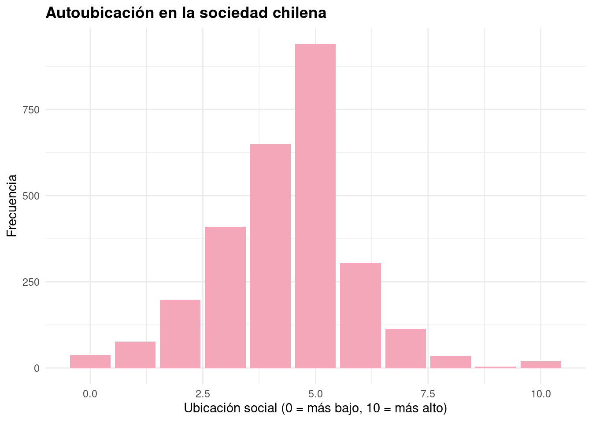
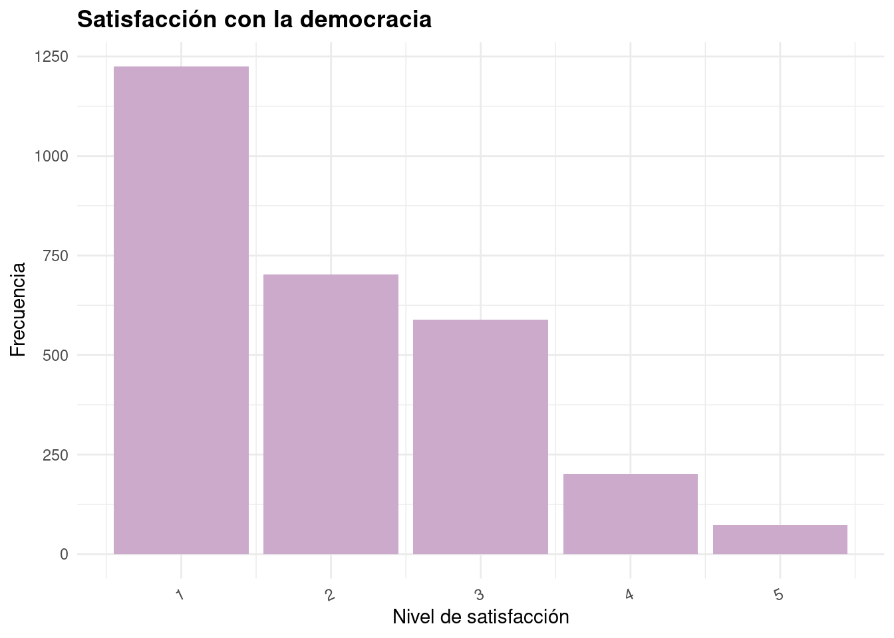
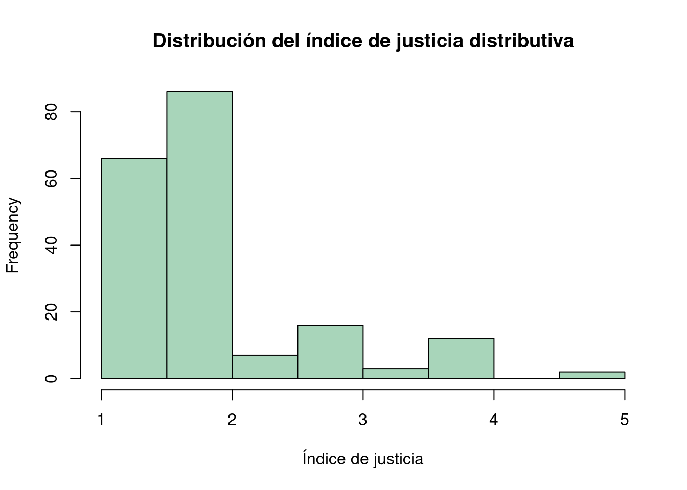
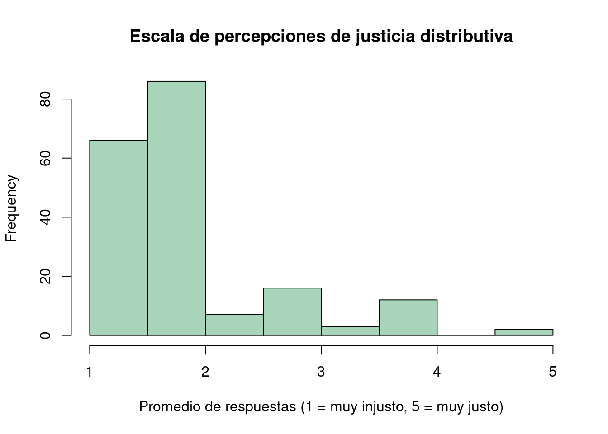

# Carga Librerías --------------------------------------------------------------
library(pacman)
pacman::p_load(tidyverse,
car,
stargazer,
sjlabelled,
sjPlot,
confintr,
gginference,
rempsyc,
broom,
sjmisc,
dplyr,
knitr,
flextable)
options(scipen = 999) # para desactivar notacion cientifica
rm(list = ls()) # para limpiar el entorno de trabajo
# Carga datos ------------------------------------------------------------------
load("input/ELSOC_Long.RData")Análisis Descriptivo de la Autopercepción Social y la Satisfacción Democrática en Chile (ELSOC 2016)
Introducción
En el contexto chileno actual, marcado por transformaciones políticas, desigualdades persistentes y un creciente distanciamiento entre ciudadanía e instituciones, se vuelve relevante comprender cómo las personas se perciben a sí mismas dentro del entramado social. Esta percepción subjetiva de la posición social puede incidir en diversas dimensiones de la vida, incluyendo las actitudes hacia la democracia y su evaluación.
Desde la sociología, resulta clave estudiar estos fenómenos considerando no solo las estructuras objetivas (como ingreso o educación), sino también las representaciones que las personas construyen respecto a su lugar en la sociedad. El presente estudio busca explorar la relación entre la autoubicación social subjetiva y la satisfacción con la democracia en Chile.
Entendemos por autoubicación social la forma en que los/as individuos/as se posicionan en una escala de estatus social percibido, medida del 0 (posición más baja) al 10 (más alta). Por su parte, la satisfacción con la democracia remite a la valoración que la ciudadanía hace del funcionamiento del régimen democrático, considerado un indicador clave de legitimidad política.
La relevancia sociológica de este estudio radica en que diversas investigaciones han mostrado que la percepción subjetiva del estatus social influye en la forma en que las personas se relacionan con instituciones, política y bienestar general (Manstead 2018; Kraus, Piff, and Keltner 2009). En contextos de alta desigualdad como el chileno, esta percepción puede alejarse de indicadores objetivos, pero aún así tener efectos significativos sobre las actitudes cívicas.
Nuestra hipótesis plantea que: a medida que aumenta la autoubicación social subjetiva (es decir, las personas se sienten en una mejor posición), tiende a aumentar la satisfacción con la democracia. Esta relación puede explicarse por una mayor sensación de integración y reconocimiento social entre quienes se perciben en una mejor posición.
La fuente de datos utilizada es la Encuesta Longitudinal Social de Chile (ELSOC), Ola 1 del año 2016. Esta encuesta es representativa a nivel nacional y permite analizar actitudes y percepciones sociales de la población adulta en el país.
Selección de variables y justificación sociológica
1. Autoubicación en la sociedad chilena (autoubi_socie)
Esta variable recoge la percepción subjetiva de estatus social en una escala del 0 al 10. Su inclusión es central, ya que permite captar cómo las personas evalúan su lugar en la estructura social, considerando factores no siempre capturados por indicadores objetivos (como el capital cultural o simbólico). En estudios previos, esta percepción ha mostrado ser predictiva de bienestar, confianza y actitudes políticas (Operario, Adler, and Williams 2004; Kraus, Piff, and Keltner 2009).
2. Satisfacción con el funcionamiento de la democracia (satis_demo)
Se trata de una variable ordinal que refleja la evaluación de las personas sobre la democracia chilena. Esta medida es clave para evaluar el vínculo entre ciudadanía e instituciones, especialmente en un país donde los niveles de confianza política han sido históricamente bajos. La sociología política ha demostrado que la percepción de justicia y representación se relaciona estrechamente con el nivel de satisfacción democrática (Norris 2011).
## Filtrar y seleccionar -------------------------------------------------------
data <- elsoc_long_2016_2022 %>%
filter(ola==1) %>%
select(d01_01,c01)
## Remover NA's ----------------------------------------------------------------
data <- data %>%
set_na(., na = c(-888, -999)) %>%
na.omit()
#Reetiquetado de variables
data <- data %>% rename("satis_demo"=c01,
"autoubi_socie"=d01_01)
data$satis_demo <- set_label(data$satis_demo, label = "Satisfacción con el funcionamiento de la democracia")
data$autoubi_socie <- set_label(data$autoubi_socie, label = "Autoubicación en la sociedad chilena")Visualización de resultados
A continuación, se presenta una tabla descriptiva que resume las principales medidas estadísticas para las variables de interés en este estudio: autoubicación social subjetiva y satisfacción con la democracia.
stargazer(data,type= "text")
==========================================
Statistic N Mean St. Dev. Min Max
------------------------------------------
autoubi_socie 2,790 4.352 1.555 0 10
satis_demo 2,790 1.995 1.084 1 5
------------------------------------------Gráficos
Teniendo nuestra tabla descriptiva como punto de partida, realizaremos a continuación una serie de gráficos que nos permitirán visualizar la distribución de las variables de interés. Estas representaciones gráficas facilitarán la comprensión de los patrones presentes en los datos y apoyarán la interpretación de los resultados obtenidos.
Gráfico 1: Distribución de la autoubicación social subjetiva
A continuación, se muestra un gráfico que representa la distribución de la variable autoubicación social subjetiva. Este gráfico permite observar cómo se concentran las respuestas a lo largo de la escala de 0 a 10, identificando posibles asimetrías, acumulaciones o extremos en la percepción del estatus social.
ggplot(data, aes(x = autoubi_socie)) +
geom_bar(fill = "#F4A7B9") + # rosado pastel
labs(
title = "Autoubicación en la sociedad chilena",
x = "Ubicación social (0 = más bajo, 10 = más alto)",
y = "Frecuencia"
) +
theme_minimal(base_family = "sans") +
theme(plot.title = element_text(face = "bold"))
Grafico 2
El siguiente gráfico muestra la distribución de la variable satisfacción con la democracia. Dado que esta se mide en una escala de 1 a 5, el gráfico facilita identificar tendencias generales en la valoración que hace la ciudadanía del funcionamiento democrático en Chile.
ggplot(data, aes(x = satis_demo)) +
geom_bar(fill = "#CBAACB") + # lila pastel
labs(
title = "Satisfacción con la democracia",
x = "Nivel de satisfacción",
y = "Frecuencia"
) +
theme_minimal(base_family = "sans") +
theme(axis.text.x = element_text(angle = 25, hjust = 1),
plot.title = element_text(face = "bold"))
Interpretación de resultados
Los resultados descriptivos muestran que la autoubicación social subjetiva presenta un promedio de 4.35 en una escala de 0 a 10, con una desviación estándar de 1.56. Esto sugiere que, en promedio, las personas se perciben en una posición intermedia-baja dentro de la escala social, con cierta dispersión en las respuestas. El mínimo reportado fue 0 y el máximo 10, lo que indica que se utilizaron todos los niveles posibles de la escala.
Por otro lado, la satisfacción con la democracia tiene un promedio de 1.99 en una escala de 1 a 5, con una desviación estándar de 1.08. Este resultado indica un nivel de satisfacción relativamente bajo entre las personas encuestadas, con una dispersión moderada. Aunque el valor máximo observado fue 5, el promedio cercano a 2 sugiere una tendencia general hacia la insatisfacción con el funcionamiento de la democracia en Chile al momento de la medición.
En conjunto, los datos muestran que tanto la percepción del estatus social como la satisfacción con la democracia tienden a ubicarse en niveles bajos, lo que podría estar reflejando tensiones sociales importantes y una desconexión entre ciudadanía e instituciones. Estos resultados dan pie a profundizar en el análisis de la relación entre ambas variables.
Sección Trabajo 2 revisar
Asociación entre posición socioeconómica y satisfacción democrática
En esta sección se construye una base de datos nueva a partir de la Ola 1 de la Encuesta Longitudinal Social de Chile (ELSOC 2016), con el objetivo de explorar la relación entre la posición socioeconómica de las personas y su percepción sobre el funcionamiento de la democracia en Chile.
Se seleccionan variables clave como el nivel educacional, los ingresos líquidos mensuales, la satisfacción con la democracia, la autoubicación social, la tendencia política y percepciones sobre justicia en el acceso a educación y salud. Estas variables son renombradas, etiquetadas y tratadas para eliminar valores perdidos, permitiendo un análisis más claro.
Además, se realiza una recodificación de los ingresos en 10 tramos ordenados para facilitar su análisis comparativo. Posteriormente, se desarrollarán:
- Tablas de correlación entre nivel educacional, ingresos y satisfacción democrática, con el fin de evaluar asociaciones entre posición social y legitimidad del sistema democrático.
- Índices y escalas construidas a partir de variables actitudinales, como percepciones de justicia y autoubicación social, que permitirán representar dimensiones más complejas.
- Análisis exploratorios complementarios que contribuyan a caracterizar los perfiles sociales y sus percepciones políticas.
Esta preparación metodológica sienta las bases para los análisis sustantivos que siguen en las siguientes secciones del trabajo.
## Filtrar y seleccionar -------------------------------------------------------
data <- elsoc_long_2016_2022 %>%
filter(ola==1) %>%
select(sexo=m0_sexo,edad=m0_edad,nedu=m01,
m14,c01,c15,d01_01,d02_02,d02_03)
## Remover NA's ----------------------------------------------------------------
data <- data %>%
set_na(., na = c(-888, -999)) %>%
na.omit()
#Reetiquetado de variables
data <- data %>% rename("nivel_educacional"=nedu, #Nivel educacional.
"ing_liqui_mens"=m14, #Ingresos liquidos mensuales.
"satis_demo"=c01, #Satisfacción con el funcionamiento de la democracia.
"tend_poli"=c15, #Tendencia política.
"autoubi_socie"=d01_01, #Autoubicacion en la sociedad chilena.
"just_acc_educ"=d02_02, #Justicia en el acceso a educación según ingresos.
"just_acc_salud"=d02_03) #Justicia en el acceso a salud según ingresos.
data$nivel_educacional <- set_label(x = data$nivel_educacional,label = "Nivel educacional")
data$ing_liqui_mens <- set_label(x = data$ing_liqui_mens,label = "Ingresos liquidos mensuales")
data$satis_demo <- set_label(x = data$satis_demo,label = "Satisfacción con el funcionamiento de la democracia")
data$tend_poli <- set_label(x = data$tend_poli,label = "Tendencia política")
data$autoubi_socie <- set_label(x = data$autoubi_socie,label = "Autoubicacion en la sociedad chilena")
data$just_acc_educ <- set_label(x = data$just_acc_educ,label = "Justicia en el acceso a educación según ingresos")
data$just_acc_salud <- set_label(x = data$just_acc_salud,label = "Justicia en el acceso a salud según ingresos")
# Recodificación en 10 grupos más detallados
data$ing_liqui_mens <- case_when(
data$ing_liqui_mens == 1 ~ 1,
data$ing_liqui_mens == 2 ~ 2,
data$ing_liqui_mens %in% 3:4 ~ 3,
data$ing_liqui_mens %in% 5:6 ~ 4,
data$ing_liqui_mens %in% 7:8 ~ 5,
data$ing_liqui_mens %in% 9:10 ~ 6,
data$ing_liqui_mens == 11 ~ 7,
data$ing_liqui_mens == 12 ~ 8,
data$ing_liqui_mens %in% 13:14 ~ 9,
data$ing_liqui_mens %in% 15:16 ~ 10,
TRUE ~ NA_real_
)
stargazer(data,type= "text")
=============================================
Statistic N Mean St. Dev. Min Max
---------------------------------------------
sexo 192 1.474 0.501 1 2
edad 192 45.167 12.852 19 73
nivel_educacional 192 5.958 2.161 1 10
ing_liqui_mens 192 6.693 2.407 1 10
satis_demo 192 1.828 1.011 1 5
tend_poli 192 7.880 4.135 0 12
autoubi_socie 192 4.443 1.561 0 10
just_acc_educ 192 1.948 0.885 1 5
just_acc_salud 192 2.000 0.976 1 5
---------------------------------------------Asociación de variables: tabla de correlaciones revisar
En esta sección se analiza la asociación entre las variables principales del estudio, con el objetivo de explorar relaciones estadísticas entre el nivel educacional, los ingresos líquidos mensuales y la satisfacción con la democracia. Estas variables permiten observar cómo la posición socioeconómica se vincula con las percepciones sobre el funcionamiento democrático en Chile.
Se utiliza el coeficiente de correlación de Pearson, adecuado para variables numéricas u ordinales tratadas como continuas. La tabla de correlaciones entrega información sobre la dirección y fuerza de la asociación entre cada par de variables.
# Cargar paquete necesario
library(Hmisc)
Attaching package: 'Hmisc'The following object is masked from 'package:sjmisc':
%nin%The following objects are masked from 'package:dplyr':
src, summarizeThe following objects are masked from 'package:base':
format.pval, units# Seleccionar las variables relevantes para la correlación
cor_data <- data %>%
select(nivel_educacional, ing_liqui_mens, satis_demo)
# Calcular la matriz de correlación con significancia (r y p)
cor_matrix <- rcorr(as.matrix(cor_data))
# Mostrar coeficientes de correlación
cor_matrix$r nivel_educacional ing_liqui_mens satis_demo
nivel_educacional 1.00000000 0.51994311 0.05900551
ing_liqui_mens 0.51994311 1.00000000 -0.03686345
satis_demo 0.05900551 -0.03686345 1.00000000# Mostrar matriz de p-valores (significancia estadística)
cor_matrix$P nivel_educacional ing_liqui_mens satis_demo
nivel_educacional NA 0.00000000000001088019 0.4162329
ing_liqui_mens 0.00000000000001088019 NA 0.6117114
satis_demo 0.41623294294324164611 0.61171139718068889835 NAInterpretación de la tabla de correlación
La siguiente tabla muestra los coeficientes de correlación de Pearson entre tres variables clave del estudio: el nivel educacional, los ingresos líquidos mensuales y la satisfacción con el funcionamiento de la democracia.
# Crear matriz con redondeo
cor_table <- round(cor_matrix$r, 2)
# Mostrar con stargazer
library(stargazer)
stargazer(cor_table, type = "text", title = "Tabla de correlación entre variables")
Tabla de correlación entre variables
=============================================================
nivel_educacional ing_liqui_mens satis_demo
-------------------------------------------------------------
nivel_educacional 1 0.520 0.060
ing_liqui_mens 0.520 1 -0.040
satis_demo 0.060 -0.040 1
-------------------------------------------------------------La correlación entre nivel educacional e ingresos líquidos mensuales es positiva y moderada (r = 0.52), y estadísticamente significativa (p < 0.001). Esto indica que a mayor nivel educativo, las personas tienden a declarar mayores ingresos, lo cual es consistente con los hallazgos tradicionales de la estratificación social.
En cambio, la correlación entre nivel educacional y satisfacción con la democracia es débil (r = 0.06) y no significativa (p = 0.41), al igual que la relación entre ingresos líquidos mensuales y satisfacción con la democracia (r = -0.04; p = 0.61). Esto sugiere que, en esta muestra, la posición socioeconómica no está asociada de forma clara con la legitimidad del sistema democrático, al menos según esta medida de satisfacción.
Estos resultados podrían reflejar que la satisfacción con la democracia en Chile no depende solamente de factores estructurales como ingresos o educación, sino que podría estar influida por otras dimensiones, como la percepción de corrupción, el desencanto con las élites políticas o las experiencias de participación ciudadana.
Índice y escala de percepciones de justicia distributiva (revisar)
Índice de percepciones de justicia distributiva
Justificación teórica
Se construyó un índice compuesto para representar una dimensión de percepciones de justicia social en el acceso a bienes públicos. Este índice se compone de dos ítems: la percepción sobre justicia en el acceso a la educación y en el acceso a la salud, ambos evaluados según nivel de ingresos. Esta decisión se basa en estudios como el Informe de Desarrollo Humano del PNUD (2021) y reportes de la OCDE (2018), que destacan la centralidad de estos sectores en la reproducción de la desigualdad en Chile.
2. Variables utilizadas
just_acc_educ: ¿Qué tan justo considera el acceso a la educación según ingresos?just_acc_salud: ¿Qué tan justo considera el acceso a la salud según ingresos?
Ambas variables utilizan una escala de 1 (Muy injusto) a 5 (Muy justo).
3. Construcción del índice
# Construcción del índice de justicia distributiva como promedio simple
data <- data %>%
mutate(
indice_justicia = (just_acc_educ + just_acc_salud) / 2
)4. Análisis descriptivo del índice
# Estadísticos descriptivos del índice
summary(data$indice_justicia) Min. 1st Qu. Median Mean 3rd Qu. Max.
1.000 1.000 2.000 1.974 2.000 5.000 # Histograma del índice de justicia distributiva
hist(data$indice_justicia,
main = "Distribución del índice de justicia distributiva",
xlab = "Índice de justicia",
col = "#A8D5BA", breaks = 10)
La distribución del índice muestra una concentración en los valores bajos, lo que indica que la mayoría de las personas perciben injusticia en el acceso a educación y salud según ingresos.
Escala: Percepciones de justicia distributiva
1. Justificación conceptual
Se construyó una escala a partir de los mismos dos ítems utilizados en el índice: percepción de justicia en el acceso a la educación y a la salud, ambas según nivel de ingresos. Se considera que estos ítems reflejan una misma actitud subyacente sobre la justicia distributiva percibida.
Este enfoque es coherente con estudios como el Informe de Desarrollo Humano del PNUD (2021) y reportes de la OCDE (2018), que destacan cómo estas áreas concentran las mayores preocupaciones ciudadanas sobre desigualdad en Chile.
2. Evaluación de la consistencia interna
# Cargar librería
library(psych)
Attaching package: 'psych'The following object is masked from 'package:Hmisc':
describeThe following object is masked from 'package:car':
logitThe following objects are masked from 'package:ggplot2':
%+%, alpha# Selección de ítems para la escala
escala_justicia <- data %>%
select(just_acc_educ, just_acc_salud)
# Calcular alfa de Cronbach
resultado_alpha <- alpha(escala_justicia)
# Ver valor del alfa crudo
resultado_alpha$total$raw_alpha[1] 0.8637841El valor obtenido fue 0.86, lo que indica una alta consistencia interna entre los ítems.
3. Construcción de la escala
# Construcción de la escala como promedio simple
data <- data %>%
mutate(
escala_justicia = (just_acc_educ + just_acc_salud) / 2
)4. Análisis descriptivo de la escala
# Estadísticos descriptivos de la escala
summary(data$escala_justicia) Min. 1st Qu. Median Mean 3rd Qu. Max.
1.000 1.000 2.000 1.974 2.000 5.000 # Histograma de la escala de percepciones de justicia distributiva
hist(data$escala_justicia,
main = "Escala de percepciones de justicia distributiva",
xlab = "Promedio de respuestas (1 = muy injusto, 5 = muy justo)",
col = "#A8D5BA", breaks = 10)
La distribución de la escala también muestra una tendencia hacia valores bajos, lo que sugiere que las personas tienden a percibir como injusto el acceso a servicios básicos según nivel de ingresos.
References
Kraus, Michael W., Paul K. Piff, and Dacher Keltner. 2009. “Social Class, Sense of Control, and Social Explanation.” Journal of Personality and Social Psychology 97 (6): 992–1004. https://doi.org/10.1037/a0016357.
Manstead, Antony S. R. 2018. “The Psychology of Social Class: How Socioeconomic Status Impacts Thought, Feelings, and Behaviour.” British Journal of Social Psychology 57 (2): 267–91. https://doi.org/10.1111/bjso.12251.
Norris, Pippa. 2011. Democratic Deficit: Critical Citizens Revisited. 1st ed. Cambridge University Press. https://doi.org/10.1017/CBO9780511973383.
Operario, Don, Nancy E. Adler, and David R. Williams. 2004. “Subjective Social Status: Reliability and Predictive Utility for Global Health.” Psychology & Health 19 (2): 237–46. https://doi.org/10.1080/08870440310001638098.